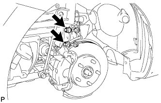
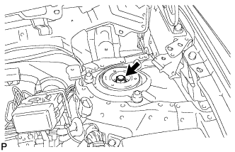
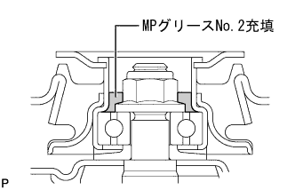
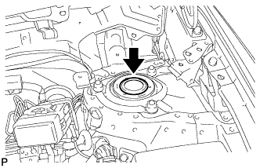
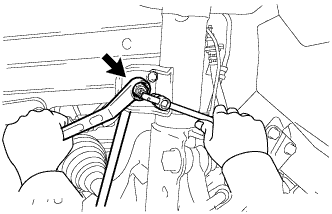
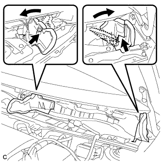
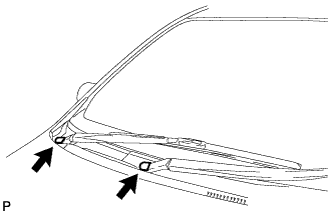

Front Shock Absorber w/ Coil Spring Installation |
| 1. Install Front Shock Absorber w/ Coil Spring |
 |
Install the shock absorber w/ coil spring (upper side) with the 3 nuts.
 |
Insert the 2 bolts, and install the front shock absorber w/ coil spring to the steering knuckle with the 2 nuts.
 |
Fully tighten the lock nut.
 |
Fill the area shown in the illustration with MP grease No. 2.
| 2. Install Front Suspension Support Dust Cover LH |
 |
Install the front suspension support dust cover LH.
| 3. Install Front Flexible Hose NO.1 |
 |
Install front brake flexible hose No. 1 with the bolt.
| 4. Install Speed Sensor Front LH |
 |
Install the speed sensor FR LH with the bolt and clamp.
| 5. Install Front Stabilizer Link Assembly LH |
 |
Install the front stabilizer link assembly LH to the shock absorber w/ coil spring with the nut.
| 6. Install Front Tire |
| 7. Install Cowl Top Panel Outer |
 |
Install the cowl top panel outer with the 8 bolts.
 |
Bend the heater air duct splash shield seal No.2 and water guard plate RH as shown in the illustration, and engage each clamp.
 |
Engage the windshield deicer wire harness connector and 3 clamps, and attach them to the cowl top panel outer. (w/ Cold Area Specification)
| 8. Install Cowl Body Mounting Reinforcement RH |
 |
Install the cowl body mounting reinforcement RH to the cowl top panel outer with the 3 bolts.
| 9. Install Windshield Wiper Motor & Link Assembly |
 |
Install the windshield wiper motor & link assembly with the 2 bolts.
Connect the connector.
| 10. Install Cowl Top Ventilator Louver RH |
 |
Engage the 5 claws and install the cowl top ventilator louver RH as shown in the illustration.
| 11. Install Front Side Panel Protector NO.1 RH |
 |
Engage the pin and install the front side panel protector NO.1 RH.
| 12. Install Cowl Top Ventilator Louver LH |
 |
Engage the 11 claws and install the cowl top ventilator louver LH as shown in the illustration.
| 13. Install Front Side Panel Protector NO.1 LH |
 |
Engage the pin and install the front side panel protector NO.1 LH.
| 14. Install Hood to Cowl Top Seal |
 |
Engage the 7 clips and install the hood to cowl top seal.
| 15. Connect Battery Negative Terminal |
| 16. Install Front Wiper Arm & Blade Assembly LH |
 |
Stop the windshield wiper motor assembly at the automatic stop position.
Using a round file or equivalent, clean the wiper arm serrations. (When reassembling)
Using a wire brush, clean the wiper pivot serrations.
 |
Install the front wiper arm & blade assembly LH with the front wiper arm nut so that it is in the position shown in the illustration.
| 17. Install Front Wiper Arm & Blade Assembly RH |
 |
Using a round file or equivalent, clean the wiper arm serrations. (When reassembling)
Using a wire brush, clean the wiper pivot serrations.
 |
Install the front wiper arm & blade assembly RH with the front wiper arm nut so that it is in the position shown in the illustration.
Operate the front wipers while spraying water or washer fluid on the glass, and check the wiping condition of the blades and that they do not interfere with the body.
| 18. Install Front Wiper Arm Head Cap |
 |
Install the 2 front wiper arm head caps.
| 19. Setting Procedure When Disconnecting/Reconnecting Battery Terminal |
Reference| 20. Inspect and Adjust Front Wheel Alignment |
)